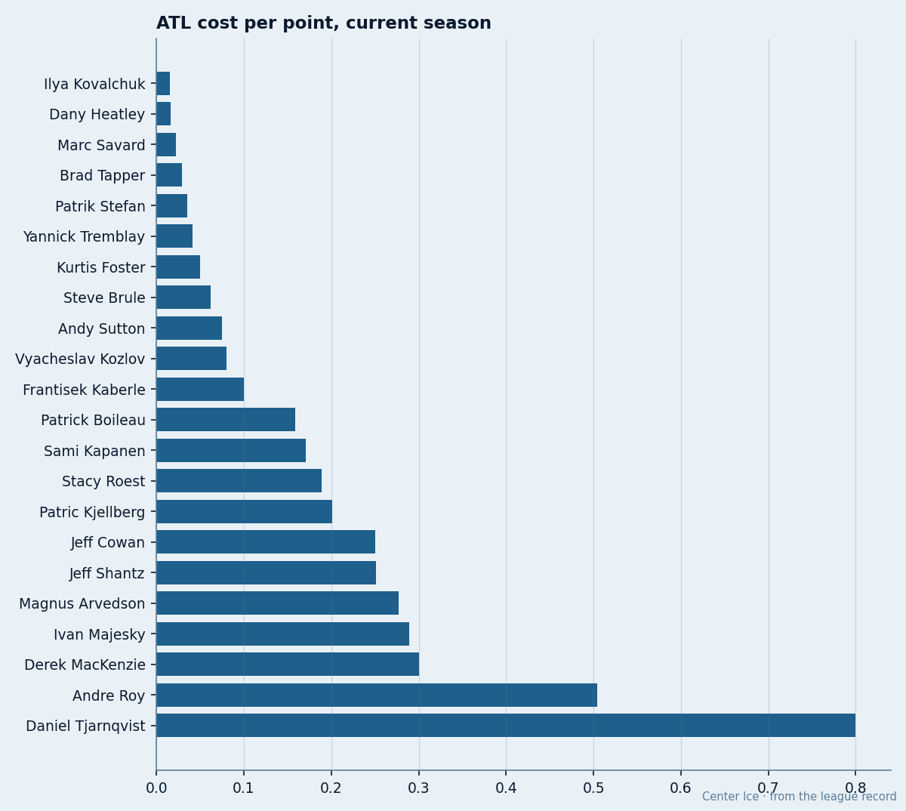

ATL
ATL$0.015M vs $0.277M: The 18-to-1 Gap Inside Atlanta's Dressing Room
Kovalchuk and Heatley are the two cheapest producers in hockey. Their teammates on the big contracts cost up to 18 times as much per point.
 Doug ReimerAnalytics editor, ex-video coach · The Slot Report
Doug ReimerAnalytics editor, ex-video coach · The Slot Report
Atlanta spends $23.46M on its active roster and gets 1288 points from it. That is $0.018M per point at the team level, 4th-best in the league. The team-level number masks a wide spread underneath: two men generate that value at a rate their expensive teammates will never match.
I pulled every Atlanta skater who has played at least 10 games this season, divided salary by points, and sorted by the result.  Ilya Kovalchuk86 sits at $0.015M per point: 73 points in 39 games on a first-year contract.
Ilya Kovalchuk86 sits at $0.015M per point: 73 points in 39 games on a first-year contract.  Dany Heatley84 is at $0.016M: 69 points in 36 games. At the other end, Magnus Arvedson costs $0.277M per point on 9 points in 39 games. The gap between the top and bottom of one roster is 18-to-1.
Dany Heatley84 is at $0.016M: 69 points in 36 games. At the other end, Magnus Arvedson costs $0.277M per point on 9 points in 39 games. The gap between the top and bottom of one roster is 18-to-1.

The cheap half of the room
Kovalchuk, 21, carries a 91 in the Bureau's Book and the Development Index has him +5. Heatley, 23, is rated 89. Both are in the final year of $1.10M deals. Both are on the Morale Scale at 95. Neither has played in the NHL longer than three seasons.
Their contract-year class puts them among the five most valuable expiring assets in the league by the ratio.  Marian Gaborik96 of
Marian Gaborik96 of  Toronto Maple Leafs matches them at $0.018M per point on the same $1.10M salary. The three together form the cheapest top-three scoring core in hockey.
Toronto Maple Leafs matches them at $0.018M per point on the same $1.10M salary. The three together form the cheapest top-three scoring core in hockey.
Marc Savard, the third center, costs $0.022M per point with 45 points in 39 games. He is also in the final year. The top three scorers this season all earn $1.10M or less.
The expensive half
Sami Kapanen earns the highest salary on the roster and has 21 points in 38 games. That is $0.171M per point, 11 times Kovalchuk's rate. The Book gives him 81 and the Morale Scale puts him at 95. He is 2 years from free agency.
Vyacheslav Kozlov costs $0.080M per point with 30 points in 39 games. The Book has him at 78. He is in year 3 of 4. Stacy Roest returns $0.189M per point on 8 points in 39 games. He is in year 4 of 4 and sits at 75 in the Book.
Arvedson is the worst value on the roster: $0.277M per point. The Morale Scale gives him 80, the lowest mark among Atlanta's skaters.
The league context
Across all 30 clubs, the best contracts this season belong to Radim Vrbata of  Carolina Hurricanes and Ramzi Abid of
Carolina Hurricanes and Ramzi Abid of  Pittsburgh Penguins, both at $0.008M per point. Kovalchuk at $0.015M and Heatley at $0.016M are 4th and 5th among all skaters who have played 30 or more games. No player above $3M salary cracks the top 20.
Pittsburgh Penguins, both at $0.008M per point. Kovalchuk at $0.015M and Heatley at $0.016M are 4th and 5th among all skaters who have played 30 or more games. No player above $3M salary cracks the top 20.
The club sits 28th in total payroll at $36.79M according to the Contract Ledger. The active-roster figure of $23.46M is what remains after dead weight comes off: the difference between the two numbers is roughly $13M in contracts belonging to players who are not currently producing for the club.
What the numbers say about the next 14 months
The roster has 11 players on one-year deals and 9 with no contract years remaining. The two best assets, Kovalchuk and Heatley, are both in that one-year group. If Atlanta re-signs them at market rates, the roster salary jumps and the team-level $0.018M per point erases.
The question for the front office is whether the cheapness is strategy or accident. Right now, 2 players generate value that 4 expensive teammates waste. If Kovalchuk and Heatley leave, the roster keeps the salaries and loses the points.
| player | gp | pts | $/pt | overall | morale | yr left |
|---|---|---|---|---|---|---|
| Ilya Kovalchuk | 39 | 73 | $0.015M | 91 | 95 | 1 |
| Dany Heatley | 36 | 69 | $0.016M | 89 | 95 | 1 |
| Marc Savard | 39 | 45 | $0.022M | 76 | 95 | 1 |
| Brad Tapper | 39 | 17 | $0.029M | 71 | 88 | 0 |
| Vyacheslav Kozlov | 39 | 30 | $0.080M | 78 | 95 | 3 |
| Sami Kapanen | 38 | 21 | $0.171M | 81 | 95 | 2 |
| Stacy Roest | 39 | 8 | $0.189M | 75 | 95 | 4 |
| Magnus Arvedson | 39 | 9 | $0.277M | 77 | 80 | 0 |
Last season's playoff run ended in the first round. The roster that produced 34 standings points at $1.08M each is the same roster that has 1288 individual points on the books. The points are concentrated in 3 men earning $1.10M each, spread thin across 20 others who cost more and produce less.